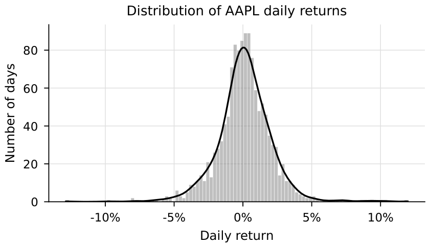
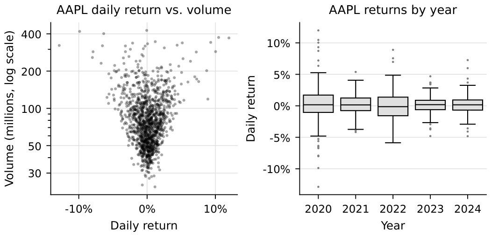
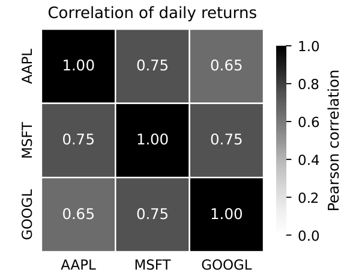
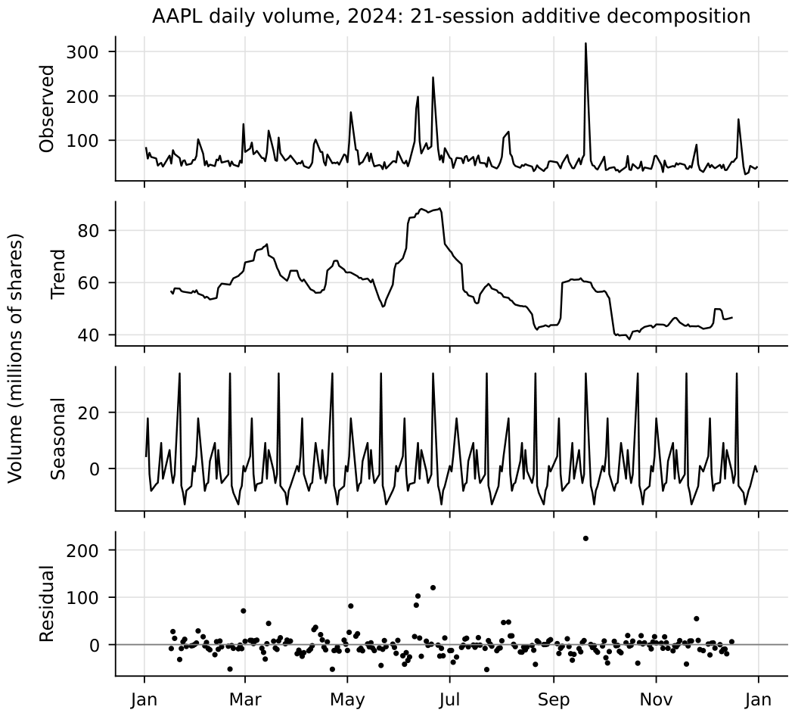
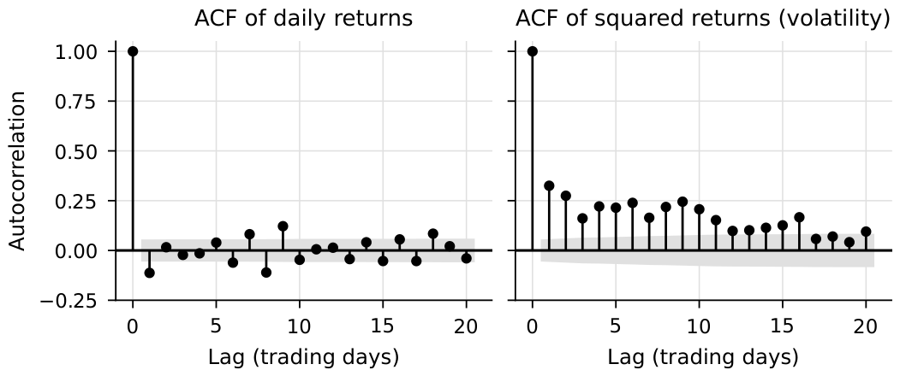
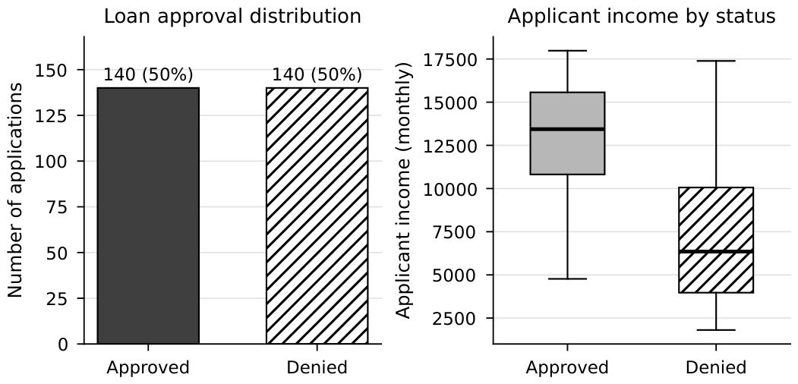

Chapter 2: The Importance of Data
Code from the chapter and AI tutorial
This page accompanies Chapter 2 of Mastering AI-Powered Finance. Use cases, practical activities, and discussion topics are in the printed chapter. Section, equation, and figure numbers that are not on this page refer to the printed chapter.
- Notebook: Download the notebook or the notebook with its data files. The notebook is the reviewed, runnable version of this tutorial, with saved outputs; its code can differ in places from the listings on this page.
- Packages:
imbalanced-learn,matplotlib,numpy,pandas,scikit-learn,scipy,seaborn,sentence-transformers,statsmodels,yfinance. - Data:
data/loan_data.csv,data/loan_preprocessed.csv,data/prices_2020_2024.csv(included in the download with data files). - API key: none needed.
Code from the Chapter
This section collects the Python code behind the examples, numbers, and figures in the printed Chapter 2, in the order of the chapter’s sections. The short cleaning and feature-engineering snippets are fragments: they assume a DataFrame df with the columns they name. The exploratory data analysis code loads adjusted daily prices for Apple, Microsoft, and Alphabet over 2020–2024 from the price snapshot bundled with the chapter’s companion notebook, and the later EDA snippets build on the df and aapl frames it creates, so run them in order. The companion notebook contains the same code, with small synthetic DataFrames that make the fragments run. Some of these examples belong to sections that were shortened in the printed chapter.
Data Cleaning and Processing
Handling Missing Data / Deletion methods
# Remove rows where 'pe_ratio' is missing
complete_cases = df.dropna(subset=['pe_ratio'])# Drop a column if it has more than 30% missing values
reduced_columns = df.copy()
if df['some_feature'].isnull().mean() > 0.3:
reduced_columns = reduced_columns.drop(columns=['some_feature'])Handling Missing Data / Single imputation
# Fill missing P/E with the median of its sector
median_imputed = df.copy()
median_imputed['pe_ratio'] = df['pe_ratio'].fillna(
df.groupby('sector')['pe_ratio'].transform('median'))# Create a flag for missing values
df['pe_ratio_was_missing'] = df['pe_ratio'].isnull().astype(int)
# Impute with a sentinel value
df['pe_ratio'] = df['pe_ratio'].fillna(-1)Handling Missing Data / Time-series imputation
# Forward fill missing daily prices
df['price'] = df['price'].ffill() # Stale valuation marks, not new trades# Retrospective interpolation uses future endpoints; do not use as-of features.
df['rate_retrospective'] = df['interest_rate'].interpolate(method='linear')
# Past-only alternative for an as-of known rate:
df['interest_rate'] = df['interest_rate'].ffill()Handling Missing Data / Advanced, model-based imputation
from sklearn.impute import KNNImputer
imputer = KNNImputer(n_neighbors=3)
# Select numeric columns for imputation
numeric_cols = ['market_cap', 'assets', 'revenue']
from sklearn.preprocessing import StandardScaler
scale = StandardScaler()
scaled = scale.fit_transform(df[numeric_cols])
df[numeric_cols] = scale.inverse_transform(imputer.fit_transform(scaled))from sklearn.experimental import enable_iterative_imputer
from sklearn.impute import IterativeImputer
imputer = IterativeImputer(max_iter=10, random_state=0)
numeric_cols = ['feature1', 'feature2', 'feature3']
df[numeric_cols] = imputer.fit_transform(df[numeric_cols])Outliers
# Identify outliers using the Interquartile Range (IQR) rule
Q1 = df['returns'].quantile(0.25)
Q3 = df['returns'].quantile(0.75)
IQR = Q3 - Q1
lower_bound = Q1 - 1.5 * IQR
upper_bound = Q3 + 1.5 * IQR
outliers = df[(df['returns'] < lower_bound) | (df['returns'] > upper_bound)]# Calculate the robust z-score for a series
from scipy.stats import median_abs_deviation
median = df['returns'].median()
# Calculate MAD for the non-missing values
mad = median_abs_deviation(df['returns'].dropna())
df['robust_z'] = (0.6745 * (df['returns'] - median) / mad
if pd.notna(mad) and mad > 0 else float('nan'))# Use Isolation Forest for multi-dimensional outlier detection
from sklearn.ensemble import IsolationForest
# Select features to use for detection, dropping any rows with NaNs
features = df[['returns', 'volume']].dropna()
iso_forest = IsolationForest(contamination='auto', random_state=42)
# fit_predict returns -1 for outliers and 1 for inliers
outlier_preds = iso_forest.fit_predict(features)
features['is_outlier'] = outlier_predsOutliers / What to do about them
# Fix a known decimal slip on a specific date
error_date = '2025-09-18'
if error_date in df.index:
df.loc[error_date, 'price'] = df.loc[error_date, 'price'] / 10
else:
print(f"{error_date} is not present in this sample; no correction applied.")# Drop a row corresponding to a non-repairable error when it exists
if error_date in df.index:
df.drop(index=error_date, inplace=True)
else:
print(f"{error_date} is not present in this sample; no row dropped.")# Cap returns at the 1st and 99th percentiles
lower_b = df['returns'].quantile(0.01)
upper_b = df['returns'].quantile(0.99)
df['returns_capped'] = df['returns'].clip(lower=lower_b, upper=upper_b)import numpy as np
# Calculate proportional log changes; variance need not be constant
df['log_returns'] = np.log(df['price'] / df['price'].shift(1))Handling Imbalanced Data / Under-sampling the majority class
from sklearn.utils import resample
from sklearn.model_selection import train_test_split
# IID illustration: split first; use time-aware splits for chronological data.
fraud_train, fraud_test = train_test_split(
df, test_size=0.25, stratify=df['is_fraud'], random_state=42)
# Resample training rows only; keep fraud_test at its original prevalence.
df_majority = fraud_train[fraud_train['is_fraud'] == 0]
df_minority = fraud_train[fraud_train['is_fraud'] == 1]
# Undersample majority class to match minority class
df_majority_undersampled = resample(
df_majority,
replace=False, # Sample without replacement
n_samples=len(df_minority), # Match minority class size
random_state=42
)
# Combine minority class with undersampled majority class
df_balanced = pd.concat([df_majority_undersampled, df_minority])Handling Imbalanced Data / Oversampling the minority class
# Oversample minority class to match majority class
df_minority_oversampled = resample(
df_minority,
replace=True, # Sample with replacement (allows duplicates)
n_samples=len(df_majority), # Match majority class size
random_state=42
)
# Combine oversampled minority class with majority class
df_balanced = pd.concat([df_majority, df_minority_oversampled])Handling Imbalanced Data / SMOTE (Synthetic Minority Over-sampling Technique)
from imblearn.over_sampling import SMOTE
# Prepare features and target
X = fraud_train.drop('is_fraud', axis=1)
y = fraud_train['is_fraud']
from sklearn.preprocessing import StandardScaler
smote_scaler = StandardScaler()
X_scaled = smote_scaler.fit_transform(X)
X_test_scaled = smote_scaler.transform(fraud_test.drop('is_fraud', axis=1))
# Apply SMOTE to generate synthetic minority examples
smote = SMOTE(random_state=42)
X_resampled, y_resampled = smote.fit_resample(X_scaled, y)
# SMOTE can produce fractional counts; these are synthetic, not transactions.
print(f"Original class distribution: {y.value_counts().to_dict()}")
print(f"Resampled class distribution: {pd.Series(y_resampled).value_counts().to_dict()}")Exploratory Data Analysis
Univariate Analysis: Profiling a Single Variable
import os
from pathlib import Path
import yfinance as yf
import pandas as pd
# The tickers we want
tickers = ["AAPL", "MSFT", "GOOGL"]
# The bundled snapshot keeps the statistics below reproducible: auto_adjust
# back-adjusts the whole history on every dividend, so a live download drifts
# after publication. Set REFRESH_MARKET_DATA=1 to fetch current data instead.
SNAPSHOT = Path("data/prices_2020_2024.csv")
if SNAPSHOT.exists() and os.environ.get("REFRESH_MARKET_DATA") != "1":
raw = pd.read_csv(SNAPSHOT, header=[0, 1], index_col=0, parse_dates=True)
else:
raw = yf.download(tickers, start="2020-01-01", end="2025-01-01",
interval="1d", group_by="ticker", auto_adjust=True)
frames = [] # store each ticker's cleaned frame
for t in tickers:
# Extract this ticker's columns
df_t = raw[t].copy()
# Keep Kaggle columns and reset index
df_t = df_t[["Open", "High", "Low", "Close", "Volume"]].reset_index()
# Rename to Kaggle-style names
df_t = df_t.rename(
columns={
"Date": "date",
"Open": "open",
"High": "high",
"Low": "low",
"Close": "close",
"Volume": "volume",
}
)
# Add ticker name
df_t["Name"] = t
frames.append(df_t)
# Combine all tickers into one DataFrame
df_all = pd.concat(frames, ignore_index=True)
# Convert date column to datetime and set as index (matches Kaggle behavior)
df_all["date"] = pd.to_datetime(df_all["date"])
df = df_all.set_index("date").sort_index()
aapl = df[df["Name"] == "AAPL"][["close", "volume"]].copy()
aapl["daily_return"] = aapl["close"].pct_change(fill_method=None)Univariate Analysis: Profiling a Single Variable / Central tendency
# Mini-case — Trading Volume (instead of revenue)
mean_volume = aapl["volume"].mean()
median_volume = aapl["volume"].median() # Often more representative
print(f"Mean Volume: {mean_volume:,.0f}")
print(f"Median Volume: {median_volume:,.0f} (More typical day)\n")Output:
Mean Volume: 90,571,035
Median Volume: 76,283,350 (More typical day)Univariate Analysis: Profiling a Single Variable / Dispersion
# Mini-case — Realized Volatility (using daily returns)
std_dev = aapl["daily_return"].std()
q3 = aapl["daily_return"].quantile(0.75)
q1 = aapl["daily_return"].quantile(0.25)
iqr = q3 - q1
print(f"Standard Deviation of Returns: {std_dev:.4f}")
print(f"Interquartile Range (IQR): {iqr:.4f} (Robust measure of spread)")Output:
Standard Deviation of Returns: 0.0200
Interquartile Range (IQR): 0.0204 (Robust measure of spread)Univariate Analysis: Profiling a Single Variable / Shape: skew and tails
import seaborn as sns
import matplotlib.pyplot as plt
# Check for asymmetry and fat tails in daily returns
skewness = aapl["daily_return"].skew()
kurtosis = aapl["daily_return"].kurtosis()
print(f"Skewness: {skewness:.4f}")
print(
f"Kurtosis: {kurtosis:.4f} (> 0 indicates fatter tails than a normal distribution)\n"
)
# Visualize the distribution
sns.histplot(aapl["daily_return"].dropna(), kde=True, bins=100, color="0.5")
plt.title("Distribution of AAPL Daily Returns")
plt.xlabel("Daily Return")
# save the figure
plt.savefig("aapl_daily_returns_distribution.pdf", dpi=300, bbox_inches="tight")
plt.show()Output:
Skewness: 0.1056
Kurtosis: 5.2778 (> 0 indicates fatter tails than a normal distribution)
Bi-variate Analysis: Uncovering Relationships
# Pivot the data to get tickers as columns
price_df = df.pivot(columns="Name", values="close")[["AAPL", "MSFT"]]
# Mini-case: Shared drift
# 1. High correlation in prices due to a common trend
price_corr = price_df.corr(method="pearson")
print("--- Correlation of Prices ---")
print(price_corr)
# 2. Compare return correlation; it need not vanish
return_corr = price_df.pct_change(fill_method=None).corr(method="pearson")
print("\n--- Correlation of Returns ---")
print(return_corr)Output:
--- Correlation of Prices ---
Name AAPL MSFT
Name
AAPL 1.000000 0.930175
MSFT 0.930175 1.000000
--- Correlation of Returns ---
Name AAPL MSFT
Name
AAPL 1.000000 0.748328
MSFT 0.748328 1.000000Bi-variate Analysis: Uncovering Relationships / Seeing the relationship
fig, axes = plt.subplots(1, 2, figsize=(16, 6))
# Scatter plot for two continuous variables (return vs. volume)
sns.scatterplot(data=aapl, x="daily_return", y="volume", ax=axes[0],
color="black", alpha=0.35, s=8)
axes[0].set_title("AAPL Daily Return vs. Volume")
axes[0].set_ylabel("Volume (log scale)")
axes[0].set_yscale("log")
# Box plot for a categorical and a continuous variable
# We'll create a 'year' category for this example
aapl_returns_by_year = aapl.copy()
aapl_returns_by_year["year"] = aapl_returns_by_year.index.year
sns.boxplot(data=aapl_returns_by_year, x="year", y="daily_return", ax=axes[1],
color="0.88", linecolor="black")
axes[1].set_title("Distribution of AAPL Returns by Year")
# save the figure
plt.savefig(
"aapl_return_vs_volume_and_yearly_boxplot.pdf", dpi=300, bbox_inches="tight"
)
plt.tight_layout()
plt.show()
# Heatmap for an overview of many variables
return_matrix = df.pivot(columns="Name", values="close")[tickers].pct_change(fill_method=None)
correlation_matrix = return_matrix.corr()
sns.heatmap(correlation_matrix, annot=True, cmap="Greys", fmt=".2f")
plt.title("Correlation Matrix of Daily Returns")
# save the figure
plt.savefig("correlation_matrix_heatmap.pdf", dpi=300, bbox_inches="tight")
plt.show()

Time-Series Exploration: Market Dynamics Over Time
This example appears here in full; the printed chapter does not include it.
A stock’s price is not an independent draw each day; it is anchored to yesterday’s close, which creates dependencies that simple statistical methods may overlook. Time also carries its own patterns. Calendar effects manifest in consistent ways: month-end portfolio rebalancing tends to drive trading volume higher, earnings announcements bring clusters of volatility, and daily returns often follow systematic quirks, such as the well-documented “Monday effect” (Shleifer 2000). Market memory manifests as momentum, where price trends persist, or mean reversion, where they correct. Structural breaks from crises, regulatory changes, or market evolution can instantly invalidate years of historical relationships, making pre-2008 risk models useless for post-crisis markets. Time series analysis isn’t an optional nuance; it’s fundamental to avoiding models that work perfectly on shuffled data but fail catastrophically in live trading.
Components you can often isolate
- Trend:
-
long-run direction.
- Seasonality:
-
repeating cycles: quarterly revenue, month-end flows, event calendars.
- Residuals:
-
what’s left after you remove trend and seasonality.
Daily returns seldom show seasonal patterns; volumes and fundamentals often do.
from statsmodels.tsa.seasonal import seasonal_decompose
# Decompose daily trading volume
# A retrospective 21-session pattern, not a true calendar-month decomposition.
# We'll use a subset of the data for a clearer plot
aapl.index = pd.to_datetime(aapl.index)
volume_subset = aapl["volume"]["2024-01-01":"2024-12-31"].dropna()
if len(volume_subset) < 42:
raise ValueError("At least two 21-session cycles are required.")
result = seasonal_decompose(volume_subset, model="additive", period=21)
print("Decomposing Trading Volume into Trend, Seasonality, and Residuals")
fig = result.plot()
fig.set_size_inches(15, 8)
# save the figure
plt.savefig("aapl_volume_decomposition.pdf", dpi=300, bbox_inches="tight")
plt.show()Output:

Memory and regimes
Autocorrelation (ACF) shows how today relates to earlier lags; partial autocorrelation (PACF) teases out direct links from indirect ones. Returns often exhibit near-zero autocorrelation, while squared returns retain memory, a characteristic of classic volatility clustering. Keep an eye out for breaks (policy shifts, crises) that change the rules mid-sample (Hyndman and Athanasopoulos 2021).
- Short-horizon behavior:
-
Slight positive ACF at very short lags hints at momentum; a flip to negative at the following few lags points to mean reversion.
- Volatility clustering:
-
The ACF of squared returns decays slowly, indicating that high-volatility periods persist.
from statsmodels.graphics.tsaplots import plot_acf, plot_pacf
# Prepare squared returns to check for volatility clustering
aapl["sq_returns"] = aapl["daily_return"] ** 2
fig, axes = plt.subplots(1, 2, figsize=(16, 5))
# ACF of returns often shows little to no memory
plot_acf(
aapl["daily_return"].dropna(), lags=20, ax=axes[0], title="ACF of Daily Returns"
)
# ACF of squared returns shows memory (volatility clustering)
plot_acf(
aapl["sq_returns"].dropna(),
lags=20,
ax=axes[1],
title="ACF of Squared Returns (Volatility)",
)
# save the figure
plt.savefig("aapl_acf_returns_and_squared_returns.pdf", dpi=300, bbox_inches="tight")
plt.tight_layout()
plt.show()Output:

Calendars and alignment
Work on the right clock: business days for trading processes and venue calendars for global events. Align events with as-of joins to avoid peeking into the future. Handle time zones consistently: store in UTC, retain native zones for features like “after close.”
print("Original data with weekend gaps:")
print(aapl["close"].loc["2024-01-01":"2024-01-10"])
# Weekdays are not an exchange calendar. These filled prices are stale marks;
# use actual trading sessions for returns and backtests.
business_day_prices = aapl["close"].resample("B").last()
# Forward-fill any gaps created by holidays (e.g., Jan 1, 2024 was a holiday)
business_day_prices_filled = business_day_prices.ffill()
print("\nResampled and forward-filled data:")
print(business_day_prices_filled.loc["2024-01-01":"2024-01-10"])Output:
Original data with weekend gaps:
date
2024-01-02 183.404007
2024-01-03 182.030746
2024-01-04 179.718933
2024-01-05 178.997711
2024-01-08 183.324966
2024-01-09 182.910049
2024-01-10 183.947372
Name: close, dtype: float64
Resampled and forward-filled data:
date
2024-01-01 190.211014
2024-01-02 183.404007
2024-01-03 182.030746
2024-01-04 179.718933
2024-01-05 178.997711
2024-01-08 183.324966
2024-01-09 182.910049
2024-01-10 183.947372
Freq: B, Name: close, dtype: float64Guardrails: Check stationarity before modeling levels; prices are usually non-stationary, while returns are less so. Use rolling windows to ensure future data does not influence past estimates.
Feature Engineering
Numerical Data / Continuous Data
from sklearn.preprocessing import StandardScaler
# Assume df has columns 'trading_volume' and 'pe_ratio'
scaler = StandardScaler()
scaled_features = scaler.fit_transform(df[['trading_volume', 'pe_ratio']])
# The output is a NumPy array, which can be converted back to a DataFrame
df_scaled = pd.DataFrame(scaled_features, columns=['volume_scaled', 'pe_scaled'])import numpy as np
# Apply a log transform to reduce the skew of market_cap
df['market_cap_log'] = np.log1p(df['market_cap'])# Create 4 bins of equal width for the debt-to-income ratio
df['dti_binned'] = pd.cut(df['dti_ratio'], bins=4,
labels=['Low', 'Medium', 'High', 'Very High'])from sklearn.preprocessing import PolynomialFeatures
poly = PolynomialFeatures(degree=2, include_bias=False, interaction_only=False)
# Create interaction and polynomial features from interest_rate and inflation
inter_features = poly.fit_transform(df[['interest_rate', 'inflation']])Numerical Data / Discrete Data
# Group loan terms into broader categories
bins = [0, 120, 240, 361] # Corresponds to <=10yr, 10-20yr, >20yr
labels = ['Short-Term', 'Mid-Term', 'Long-Term']
df['loan_term_group'] = pd.cut(df['loan_term_months'], bins=bins, labels=labels)# Convert a count of late payments into a binary flag
df['had_late_payments'] = (df['num_late_payments'] > 0).astype(int)Categorical Data / Nominal Data
# Create binary columns for each unique value in 'sector'
# e.g., 'sector_Technology', 'sector_Healthcare', etc.
one_hot_df = pd.get_dummies(df['sector'], prefix='sector')
# Join the new one-hot columns back to the original DataFrame
df = df.join(one_hot_df)Categorical Data / Ordinal Data
# Define the explicit order of the categories
rating_map = {'Low': 1, 'Medium': 2, 'High': 3, 'Very High': 4}
# Map the defined ordering to the feature
df['risk_rating_ordinal'] = df['risk_rating'].map(rating_map)# Cross-fit training encodings: each row must exclude its own label.
# This shuffled example assumes IID rows; temporal data needs past-only folds.
from sklearn.model_selection import KFold
encoded = pd.Series(index=df.index, dtype=float)
for fit_idx, heldout_idx in KFold(3, shuffle=True, random_state=42).split(df):
fold_train = df.iloc[fit_idx]
target_map = fold_train.groupby('risk_rating')['default_rate'].mean()
encoded.iloc[heldout_idx] = (
df.iloc[heldout_idx]['risk_rating'].map(target_map)
.fillna(fold_train['default_rate'].mean()).to_numpy()
)
df['risk_rating_encoded'] = encoded
# External test rows use a mapping learned from the full training set only.Date and Time
# Ensure the index is a datetime object
df.index = pd.to_datetime(df.index)
# Extract time-based and cyclical features
df['day_of_week'] = df.index.dayofweek # Monday=0, Sunday=6
df['month'] = df.index.month
df['quarter'] = df.index.quarter
df['is_month_end'] = df.index.is_month_end
# df['is_trading_holiday'] = df.index.map(is_holiday_func) # Conceptual# Ensure date columns are in datetime format
df['origination_date'] = pd.to_datetime(df['origination_date'])
df['last_payment_date'] = pd.to_datetime(df['last_payment_date'])
# Elapsed time is NOT delinquency; days past due needs an unpaid due date.
# Calculate loan age and days since last payment
df['loan_age_days'] = (pd.to_datetime('2025-09-25') - df['origination_date']).dt.days
df['days_since_last_payment'] = (pd.to_datetime('2025-09-25') - df['last_payment_date']).dt.days# Localize timestamp to its original time zone (e.g., US/Eastern)
df['trade_time_local'] = df['trade_time'].dt.tz_localize('US/Eastern', ambiguous='infer')
# Convert to UTC for standardized analysis
df['trade_time_utc'] = df['trade_time_local'].dt.tz_convert('UTC')Time-Series Data
# Assume 'price' is a column in a DataFrame with a DatetimeIndex
# Lag Features: Use past values to predict the present
df['price_lag_1'] = df['price'].shift(1)
df['price_lag_5'] = df['price'].shift(5)
# Rolling Window Features: Capture recent trend and volatility
df['rolling_mean_7_sessions'] = df['price'].shift(1).rolling(window=7).mean()
df['rolling_std_7_sessions'] = df['price'].shift(1).rolling(window=7).std()# Calculate the first-order difference (period-over-period change)
# This is a currency price change, not a proportional return
df['price_diff_1'] = df['price'].diff(1)
# You can also calculate the percentage change
df['price_returns'] = df['price'].pct_change(1, fill_method=None)# Ensure the index is a datetime object
df.index = pd.to_datetime(df.index)
# Extract calendar-based features to model seasonality
df['day_of_week'] = df.index.dayofweek # Monday=0, Sunday=6
df['month'] = df.index.month
df['quarter'] = df.index.quarter
df['is_quarter_end'] = df.index.is_quarter_endTextual Data
from sklearn.feature_extraction.text import TfidfVectorizer
# Assume df['earnings_call_transcript'] contains the text for each company
corpus = df['earnings_call_transcript'].fillna('') # Handle potential missing text
vectorizer = TfidfVectorizer(max_features=500, stop_words='english')
# The result is a sparse matrix of TF-IDF features
tfidf_features = vectorizer.fit_transform(corpus)# Conceptual example using a pre-trained transformer model
from sentence_transformers import SentenceTransformer
# General-purpose sentence embeddings; FinBERT is a sentiment classifier.
model = SentenceTransformer('sentence-transformers/all-MiniLM-L6-v2')
# Long transcripts require chunking; the model truncates long inputs.
# Create a dense vector (embedding) that captures the text's meaning
# This can be used as a feature in a downstream model
df['transcript_embedding'] = df['earnings_call_transcript'].fillna('').apply(lambda x: model.encode(x))# Conceptual example of extracting sentiment and entity features
# A dependency-free polarity score: count positive against negative terms.
positive_terms = {'strong', 'lower', 'improved', 'growth'}
negative_terms = {'weak', 'rising', 'losses', 'defaults'}
def simple_sentiment(text):
words = set(text.lower().split())
return len(words & positive_terms) - len(words & negative_terms)
df['sentiment_polarity'] = df['news_headline'].apply(simple_sentiment)
# Count mentions of a specific, relevant entity
df['mentions_of_fed'] = df['central_bank_minutes'].str.count('Federal Reserve')
# This ignores negation and context ("lower losses" scores as negative). It is
# a feature-extraction toy, not a validated financial sentiment model.Boolean Data
# Create a boolean flag based on a single threshold
# This captures the business rule for a high debt-to-income ratio.
df['is_high_dti'] = df['dti_ratio'] > 0.4
# Create an interaction flag from multiple conditions to identify a specific cohort
df['is_risky_new_customer'] = (df['customer_tenure_days'] < 90) & \
(df['transaction_amount'] > 5000)
# Convert boolean to integer (0 or 1) for model input
df['is_high_dti'] = df['is_high_dti'].astype(int)# Assume 'default' is the boolean target column (1 for default, 0 for no default)
# Calculate the class distribution
class_counts = df['default'].value_counts()
class_percentages = df['default'].value_counts(normalize=True) * 100
print("Class Distribution:")
print(class_counts)
print("\nClass Percentages:")
print(f"No Default (0): {class_percentages[0]:.2f}%")
print(f"Default (1): {class_percentages[1]:.2f}%")
# Output might look like:
# No Default (0): 98.50%
# Default (1): 1.50%Document Data
Output:
# Conceptual example using a hypothetical OCR library
import re
# 1. Extract raw text from a document image
raw_text = ocr_library.process_image('invoice.png')
# 2. Create a simple binary feature: check if the word "Overdue" is present
df['is_overdue'] = 1 if re.search('overdue', raw_text, re.IGNORECASE) else 0Output:
# Conceptual example using a hypothetical IDP model
# The model returns a dictionary of extracted, structured fields
extracted_data = idp_model.extract_fields('loan_application.pdf')
# Create features from the structured output
df['document_type'] = extracted_data.get('doc_type') # e.g., 'LoanApplication'
df['applicant_income'] = extracted_data.get('Annual Income')
df['loan_amount_requested'] = extracted_data.get('Loan Amount')AI Tutorial: Preprocessing Loan Application Data for Approval Prediction
In this use case, we demonstrate how raw loan application data can be systematically preprocessed to build reliable credit risk models. We move through the complete preprocessing pipeline, from initial data quality assessment through feature engineering, applying the cleaning, exploration, and feature-construction techniques introduced earlier in this chapter to a single end-to-end example. The tutorial can be run in a Jupyter notebook with standard scientific Python (pandas, numpy, matplotlib, seaborn) plus scikit-learn.
The data is synthetic. The file data/loan_data.csv is not a real lending portfolio; it is generated programmatically with a fixed seed (np.random.default_rng(42), 400 rows) so the example is fully reproducible and free of any real applicant’s personal information. The column schema deliberately mirrors the widely used public “Loan Prediction” template (Gender, Married, ApplicantIncome, Credit_History, Loan_Status, and so on), but every value is fabricated. Two artifacts of this fabrication are visible in the data and worth naming so they are not mistaken for real-world signal. First, missing values are not organic: they are injected by sampling None with a fixed probability (roughly 5% per affected column), which is why the missingness counts below are small and roughly uniform rather than concentrated by economic cause as discussed in Section “Handling Missing Data”. Second, and most important, the target Loan_Status is not drawn independently; it is manufactured from a hidden scoring rule.
The planted label rule explains why the exploratory analysis finds associations with approval. Approval is assigned by computing a latent score, score = (ApplicantIncome + CoapplicantIncome)/10000 + Credit_History (with missing Credit_History treated as 0.5), and then setting Loan_Status to Y when that score exceeds its own median and N otherwise. Both income and credit history enter this rule. Their relative association with approval depends on the generated sample and must be assessed from the training-data EDA; the coefficient sizes alone do not establish which predictor dominates. These are deliberately planted relationships, not evidence about actual lending decisions.
Understanding proper data preprocessing is crucial for credit risk modeling. Raw loan applications contain incomplete information, inconsistent formats, and unstructured features that traditional rule-based systems may handle through manual review. By applying systematic preprocessing methods, we can transform messy application data into clean, structured features that machine learning models require while preserving the economic relationships that determine creditworthiness. In a production credit-risk setting this synthetic file would be replaced by a governed feed of real applications joined to bureau data, and the cleaning, encoding, and scaling steps shown here would run inside a versioned, auditable pipeline rather than a single notebook.
The primary goal is to prepare loan application data for approval prediction through comprehensive data cleaning, exploratory analysis, and feature engineering that captures applicant repayment capacity.
The dataset includes the following features:
Gender: Applicant gender (Male or Female)
Married: Marital status (Yes or No)
Dependents: Number of persons depending on the applicant
Education: Applicant education level (Graduate or Not Graduate)
Self_Employed: Self-employment status (Yes or No)
ApplicantIncome: Monthly income of the primary applicant
CoapplicantIncome: Monthly income of the co-applicant
LoanAmount: Requested loan amount (in thousands)
Loan_Amount_Term: Loan repayment term (in months)
Credit_History: Whether credit history meets guidelines (binary indicator)
Property_Area: Residential area type (Urban, Semiurban, or Rural)
Loan_Status: Target variable indicating loan approval (Y = approved, N = denied)
The preprocessing workflow is organized into three thematic stages:
Data Cleaning: Identifying missing value patterns, applying domain-informed imputation strategies, and validating data quality
Exploratory Data Analysis: Understanding approval rates, comparing financial characteristics between approved and denied applications, and identifying predictive features
Feature Engineering: Creating financial capacity ratios, encoding categorical variables, and scaling features for model compatibility
This structured approach ensures that data quality issues are resolved before analysis, insights from exploration inform feature creation decisions, and the final dataset accurately represents applicant creditworthiness signals.
Data Overview. The bundled data and the notebook fallback are synthetic teaching fixtures; row counts, missingness, and approval rates must be read from the actual file. Reserve the holdout before inspecting outcome relationships. With application dates, use a chronological split that keeps each date in one partition; without dates, use a labelled IID split that does not claim to test future performance. Approval labels represent the planted decision rule, not realized defaults or verified affordability.
Imputation values are learned from the training partition and applied unchanged to the holdout. Categorical features and the binary credit-history flag use the training mode; continuous fields use the training median. These simple fills illustrate preprocessing, not a recommendation to erase economically informative missingness in actual applications. The subsequent target comparisons and feature selection use training rows only.
import pandas as pd
import numpy as np
import matplotlib.pyplot as plt
import seaborn as sns
from sklearn.model_selection import train_test_split
from sklearn.preprocessing import OneHotEncoder, StandardScaler
from sklearn.compose import ColumnTransformer
# The bundled file is synthetic. Incomes are monthly currency units;
# LoanAmount is thousands of the same currency; term is in months.
loan_data = pd.read_csv("data/loan_data.csv")
# Split before inspecting target relationships or learning any preprocessing.
if loan_data['Loan_Status'].isna().any() or not loan_data['Loan_Status'].isin(['Y', 'N']).all():
raise ValueError("Loan_Status must contain only observed Y/N labels.")
if 'ApplicationDate' in loan_data.columns:
loan_data['ApplicationDate'] = pd.to_datetime(loan_data['ApplicationDate'], errors='raise')
if loan_data['ApplicationDate'].isna().any():
raise ValueError("ApplicationDate cannot be missing for a temporal split.")
loan_data = loan_data.sort_values('ApplicationDate')
cutoff = loan_data['ApplicationDate'].iloc[int(0.7 * len(loan_data))]
df = loan_data.loc[loan_data['ApplicationDate'] < cutoff].copy()
loan_test = loan_data.loc[loan_data['ApplicationDate'] >= cutoff].copy()
if df.empty or loan_test.empty:
raise ValueError("Need distinct application dates for a temporal holdout.")
print("Chronological split by ApplicationDate.")
else:
df, loan_test = train_test_split(loan_data, test_size=0.3,
stratify=loan_data['Loan_Status'], random_state=42)
df, loan_test = df.copy(), loan_test.copy()
print("No application dates: stratified IID holdout; this does not validate future performance.")
print(f"Training rows: {len(df)}; untouched holdout rows: {len(loan_test)}")
print(f"Dataset: {df.shape[0]} applications, {df.shape[1]} features")
# Identify missing values
missing_counts = df.isnull().sum()[df.isnull().sum() > 0]
print(f"\nMissing values:\n{missing_counts}")
# Fit imputation values on training rows, then apply those same values to test.
# Include numeric income fields; an absent income is not automatically zero.
categorical_columns = ['Gender', 'Married', 'Dependents', 'Education', 'Self_Employed', 'Property_Area']
numerical_columns = ['ApplicantIncome', 'CoapplicantIncome', 'LoanAmount', 'Loan_Amount_Term']
for col in categorical_columns + ['Credit_History']:
observed = df[col].mode()
if observed.empty:
raise ValueError(f"No observed training values for {col}.")
fill_value = observed.iloc[0]
df[col] = df[col].fillna(fill_value)
loan_test[col] = loan_test[col].fillna(fill_value)
for col in numerical_columns:
fill_value = df[col].median()
if pd.isna(fill_value):
raise ValueError(f"No observed training values for {col}.")
df[col] = df[col].fillna(fill_value)
loan_test[col] = loan_test[col].fillna(fill_value)
print(f"\nAfter cleaning: {df[categorical_columns + numerical_columns + ['Credit_History']].isna().sum().sum()} missing training feature values")The notebook prints the counts and statistics from the selected data and training split; no fixed output is asserted here.
Exploratory Data Analysis
Following data cleaning, we conduct exploratory analysis to understand the relationships between applicant characteristics and loan outcomes. This stage profiles the target variable distribution, compares financial metrics between approved and denied applications, and ranks which features show the strongest linear association with the approval decision. The work applies the univariate and bivariate techniques from Section “Exploratory Data Analysis” to the loan dataset, treating EDA as a briefing that decides what to engineer next rather than as additional cleaning.
The code first prints the class counts and the approval rate, then derives TotalIncome as the sum of ApplicantIncome and CoapplicantIncome so that household earning capacity can be compared across approved and denied groups. It then binarizes Loan_Status (Y maps to 1) and computes the absolute Pearson correlation of each numerical feature with that target, sorting to surface the top predictors. Two figures are saved: a bar chart of the approval distribution and a box plot of ApplicantIncome by outcome.
Read the printed correlations as descriptions of this training fixture. A strong credit-history association is expected from the planted label rule, but its exact magnitude depends on the sample. Small marginal correlations do not rule out nonlinear relationships or interactions. None of these associations establishes a real lending driver; inspect potential label leakage and protected-attribute proxies before modeling actual applications.
# Examine target distribution
print(f"\nLoan_Status distribution:")
print(df["Loan_Status"].value_counts())
approval_rate = (df["Loan_Status"] == "Y").mean() * 100
print(f"Approval rate: {approval_rate:.1f}%")
# Calculate total household income
df["TotalIncome"] = df["ApplicantIncome"] + df["CoapplicantIncome"]
# Compare income by loan status
print(f"\nApplicantIncome by approval status:")
income_stats = df.groupby("Loan_Status")["ApplicantIncome"].agg(["mean", "median"])
print(income_stats)
# Feature correlations with target
df_temp = df.copy()
df_temp["Loan_Status"] = (df_temp["Loan_Status"] == "Y").astype(int)
num_features = ["ApplicantIncome", "CoapplicantIncome", "LoanAmount",
"Loan_Amount_Term", "Credit_History", "TotalIncome"]
correlations = df_temp[num_features + ["Loan_Status"]].corr()["Loan_Status"]
correlations = correlations.drop("Loan_Status").abs().sort_values(ascending=False)
print(f"\nTop 3 features correlated with approval:")
print(correlations.head(3))
# Create visualizations
fig, axes = plt.subplots(1, 2, figsize=(14, 6))
# Plot 1: Loan approval distribution
approval_counts = df["Loan_Status"].value_counts().reindex(["Y", "N"], fill_value=0)
axes[0].bar(["Approved", "Denied"], approval_counts.values, color=["0.25", "white"],
edgecolor="black", hatch=["", "////"])
axes[0].set_ylabel("Number of Applications")
axes[0].set_title("Loan Approval Distribution")
axes[0].set_ylim([0, approval_counts.max() * 1.15])
axes[0].text(
0,
approval_counts["Y"] + 5,
f"{approval_counts['Y']}\n({round(approval_rate)}%)",
ha="center",
)
axes[0].text(
1,
approval_counts["N"] + 5,
f"{approval_counts['N']}\n({round(100 - approval_rate)}%)",
ha="center",
)
# Plot 2: Income by approval status
denied_income = df[df["Loan_Status"] == "N"]["ApplicantIncome"]
approved_income = df[df["Loan_Status"] == "Y"]["ApplicantIncome"]
bp = axes[1].boxplot(
[approved_income, denied_income], patch_artist=True
)
axes[1].set_xticks([1, 2], ["Approved", "Denied"])
bp["boxes"][0].set_facecolor("0.72")
bp["boxes"][1].set(facecolor="white", hatch="////")
axes[1].set_ylabel("Applicant Income")
axes[1].set_title("Applicant Income by Loan Status")
plt.tight_layout()
plt.savefig("outputs/eda_analysis.pdf", dpi=300, bbox_inches="tight")
plt.close()The notebook prints the counts and statistics from the selected data and training split; no fixed output is asserted here.
The printed counts, income summaries, and correlations describe only the training partition. The figure below is generated from that same partition, so its counts and income distributions match the numbers printed above. It illustrates the synthetic teaching fixture and is not evidence about actual lending decisions.

Feature Engineering
The final stage derives financial ratios with explicit units, one-hot encodes nominal categories, and standardizes numerical features. The transformer is fitted on training rows only and reused on the holdout; unknown test categories are handled without refitting. The notebooks retain additional diagnostics and exported split tables.
Three engineered features are added: total monthly household income, principal divided by annual household income, and monthly principal amortization divided by monthly income. Principal is LoanAmount multiplied by 1,000; annual income is 12 times monthly income. Positive income and term are required instead of adding arbitrary constants to denominators. The principal-only monthly burden excludes interest and existing debts, so it is not DTI or full debt-service coverage.
The synthetic approval rule uses income and credit history rather than a real affordability policy. Engineered ratios demonstrate dimensional consistency; their predictive value must be evaluated rather than assumed. Demographic fields are retained for the technical walkthrough, with their governance and fairness implications discussed in Chapter 11.
# Dataset convention: incomes are monthly currency units; LoanAmount is thousands
# of the SAME currency, and Loan_Amount_Term is months. Verify this for supplied CSVs.
for frame in [df, loan_test]:
frame['TotalIncome'] = frame['ApplicantIncome'] + frame['CoapplicantIncome']
if (frame['TotalIncome'] <= 0).any() or (frame['Loan_Amount_Term'] <= 0).any() or (frame['LoanAmount'] < 0).any():
raise ValueError('Ratios require positive household income / term and nonnegative principal.')
principal = frame['LoanAmount'] * 1000
frame['Loan_to_Annual_Income'] = principal / (12 * frame['TotalIncome'])
# Principal-only monthly burden, NOT a payment-to-income or debt-service ratio:
# interest, other debts, taxes and insurance are not observed here.
frame['Monthly_Principal_to_Income'] = principal / frame['Loan_Amount_Term'] / frame['TotalIncome']
# One-hot encode nominal categories instead of inventing an ordinal ordering.
cat_cols = ['Gender', 'Married', 'Dependents', 'Education', 'Self_Employed', 'Property_Area']
num_cols = ['ApplicantIncome', 'CoapplicantIncome', 'LoanAmount', 'Loan_Amount_Term',
'Credit_History', 'TotalIncome', 'Loan_to_Annual_Income', 'Monthly_Principal_to_Income']
preprocessor = ColumnTransformer([
('numeric', StandardScaler(), num_cols),
('categorical', OneHotEncoder(handle_unknown='ignore', sparse_output=False), cat_cols),
])
X_train = preprocessor.fit_transform(df)
X_test = preprocessor.transform(loan_test)
all_features = preprocessor.get_feature_names_out()
df_scaled = pd.DataFrame(X_train, columns=all_features, index=df.index)
test_scaled = pd.DataFrame(X_test, columns=all_features, index=loan_test.index)
df_scaled['Loan_Status'] = df['Loan_Status']
test_scaled['Loan_Status'] = loan_test['Loan_Status']
print(f"Final feature set: {len(all_features)} features")
print(f" Original numerical: {len(num_cols) - 3}")
print(" Engineered features: 3")
print(f" One-hot categorical: {len(all_features) - len(num_cols)}")
# Preserve split membership in separate outputs. Refit all preprocessing inside
# each CV training fold if these data are later used for model selection.
df_scaled.to_csv('data/loan_preprocessed_train.csv', index=False)
test_scaled.to_csv('data/loan_preprocessed_test.csv', index=False)The notebook prints the counts and statistics from the selected data and training split; no fixed output is asserted here.
The output contains eight numerical features (five original and three engineered) plus one column per category learned by the training-fitted encoder. The final count therefore depends on the observed training categories. Numerical columns are standardized; one-hot columns retain their indicator values. Separate training and test files preserve split membership. If these features are used for cross-validation, relearn every fitted transformation within each training fold from the original rows.
Preprocessing Impact
The tutorial now separates descriptive exploration from held-out evaluation. Its unit-consistent ratios and training-fitted encodings prepare inputs for approval prediction; they do not establish default risk, affordability, causal effects, or fairness. Inspect the actual printed diagnostics and evaluate a downstream model before drawing conclusions about predictive value.
Summary
You took a synthetic loan-application dataset from raw file to model-ready table: you split the data first, imputed missing values with statistics fitted on the training rows, explored the variables, and engineered unit-consistent ratios and one-hot encodings, keeping the test rows separate throughout. The Chapter 3 tutorial picks up from prepared data and trains models.